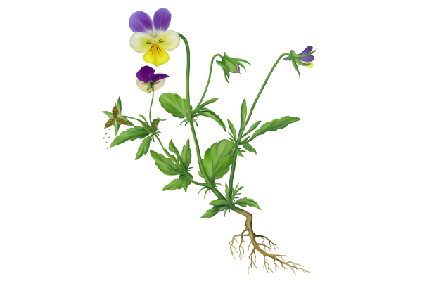

Задание 1 // Распредели по группам органы растения по их функциям
[ПРОТОКОЛ]: Перетащите органы в соответствующие технологические контейнеры.
стебель
цветок
корень
лист
почки
семена
плод
Вегетативные
Генеративные
Задание 2 // Выбери верный биологический термин
— это часть тела, выполняющая определённые функции, имеющая определённое строение, связанное с выполняемыми функциями.
Задание 3 // Выбери верный ответ
1. Какой процесс жизнедеятельности растений связан с цветками, плодами и семенами?
Задание 4 // Выбери верный ответ
1. Какой орган обеспечивает минеральное питание растению?
Задание 5 // Выбери верный ответ
1. Какой орган растения НЕ входит в состав побега?
Задание 6 // Вставь верные биологические термины
Совокупность клеток и межклеточного вещества, имеющих сходное строение и выполняющих определённые функции, образует
[т...]
,
которые формируют
[о...]
.
Совокупность взаимосвязанных между собой органов образует
[о...]
,
все части которого функционируют как единое целое.
Задание 7 // Выбери верный ответ
1. Выбери правильную последовательность уровней организации растительного организма:
Задание 8 // Вставь верные биологические термины
[Ц...]
— это укороченный (с ограниченным ростом) побег, выполняющий функции семенного размножения, образования плодов и семян.
В состав цветков входят
[т...]
,
[п...]
,
а также окружающий их
[о...]
.
Внутри пестика находятся один или несколько с... Из них после оплодотворения образуется
[с...]
.
Задание 9 // Выбери верные ответы
1. Какие из перечисленных растений относятся к покрытосеменным (цветковым) растениям? (Несколько вариантов)
Задание 10 // Анализ графической схемы [bio_flower.png]
1. Наличие каких органов указывает, что на рисунке изображено цветковое растение? (Несколько вариантов)

Задание 11 // Зачеркни лишние слова
Нажмите на ГЕНЕРАТИВНЫЕ органы, чтобы убрать их из определения вегетативных органов:
Корни ,цветки ,плоды ,побеги исемена
Задание 12 // Вставь верный биологический термин [bio_flower.png]
У некоторых растений, таких как свёкла, морковь, репа, редис, корни служат местом запасания питательных веществ. Такие корни называют к
.